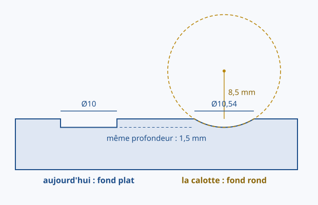

5e_C7.2 — Fabriquer une solution pour améliorer un OST existant.
Ton dé existait déjà : il tourne, il se lit, il s'imprime. On ne l'a pas refait, on ne l'a pas remplacé — on lui a changé une seule chose, et tout le reste est resté reconnaissable. C'est cela, améliorer un objet technique existant.
La règle des trois versions du cycle. En 5e on améliore un objet qui existe. En 4e on lui ajoute une fonction qu'il n'avait pas. En 3e on produit un objet entièrement nouveau. Le verbe change à chaque niveau, et c'est le verbe qui dit ce qu'on attend de toi.
Avant de corriger, il a fallu nommer. Le creux du dé a un fond plat et une arête vive : c'est la forme que laisse forcément un enlèvement de matière par extrusion. Sur un dé du commerce, le creux est une calotte — la trace qu'une bille laisserait en s'enfonçant un peu.
Personne n'a décrété que c'était un défaut. On l'a constaté en comparant à l'usage : le doigt sent l'arête chez l'un, et rien chez l'autre. Un défaut se compare, il ne se décrète pas.

calotte.py : ses cotes ne sont pas dessinées à la main.Une bille ne laisse pas son diamètre : elle laisse la trace de sa tranche à la hauteur de la surface. Ici Ø10,54 — soit 0,54 mm de plus que l'ancien creux, ce qui ne se voit pas de face.
| Bille | Centre au-dessus de la face | Creux obtenu | Matière retirée |
|---|---|---|---|
| Ø10 | 3,5 mm | Ø7,14 | 31,8 mm³ |
| Ø20 | 8,5 mm | Ø10,54 | 67,2 mm³ |
| Ø30 | 13,5 mm | Ø13,08 | 102,5 mm³ |
À enfoncement égal, une bille plus grosse laisse un creux plus large — et plus doux. La profondeur, elle, ne dépend que de la hauteur du centre.
Et la matière ? La calotte se referme vers le bas : elle retire 67,2 mm³ quand le cylindre en retire 117,8, soit 43 % de moins. Un creux plus large en surface peut donc enlever moins de matière : c'est la forme entière qui compte, pas son ouverture.
Pourquoi il a fallu retirer l'ancien creux d'abord ? Parce que la calotte est large en haut et se referme en descendant : dès 0,16 mm sous la face, le cylindre Ø10 est déjà plus large qu'elle. Posée par-dessus, la bille n'aurait mordu que le bord.
On n'a amélioré qu'un point sur vingt et un. Ce n'est pas de la paresse : c'est la démarche. On dépense peu, on regarde, et on décide ensuite — avec le prix sous les yeux : 6 plans, 6 esquisses, 21 billes.
Le vrai critère n'est pas à l'écran. Le défaut se sentait au doigt : c'est au doigt qu'il se juge. Les deux fichiers STL, v1 et v2, sont là pour être imprimés et comparés en main. Tant qu'on n'a pas tenu les deux dés, on a une opinion, pas une démonstration.